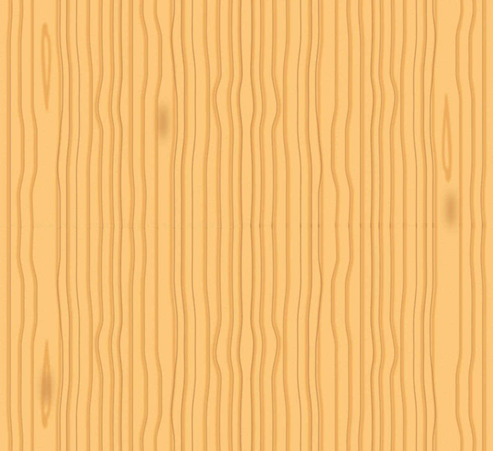
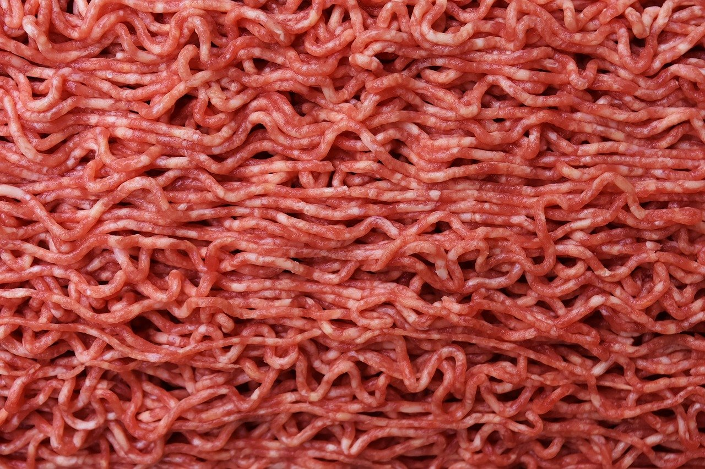
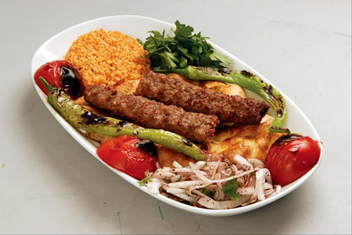

Herzlich Willkommen in der Adana Kebab Online-Küche! Hier sind Sie der Chef!
-
Formen Sie aus dem Rinderhackfleisch eine lange, dünne Frikadelle. Tipp: Halten Sie das Fleisch an der rechten unteren Ecke fest.
 -
Der Hackfleischspieß wird gegrillt...
-
Gegrillte Brotstreifen und Gemüse werden auf dem Teller verteilt...
-
Der Adana Kebabspieß wird auf den Teller gelegt...
-
Es wurde aus Versehen eine Kinderportion zubereitet. Chef, Sie sind gefragt! Machen Sie aus der kleinen Kinderportion eine große.

-
Ist es Ihnen gelungen, den schmackhaften Adana Kebab zuzubereiten? Teilen Sie unseren „Online Adana Kebab“-Tool mit Ihren Freunden auf Instagram und Facebook! So sollte das Gericht Adana Kebab aussehen:
